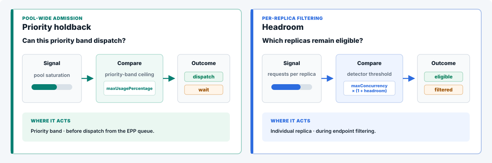

Flow control makes shared inference predictable.
Flow control is the Endpoint Picker's policy layer for multi-tenant inference. When workers are saturated, flow control utilizes queues to enforce priority, fairness, and tenant policies.
This page explains the mechanism end to end. What breaks without it, how a request travels through it, what the scheduling pattern guarantees, what it costs, and how to operate it.
Why LLM traffic breaks rate limiting
Traditional gateways limit requests per second and assume every request costs about the same. LLM requests break that assumption.
Cost is driven by input length and by the autoregressive decode loop. One request can consume orders of magnitude more compute and memory than another at the same request rate.
Noisy neighbor
There is a risk that a single tenant or request with large prompts can occupy the prefill stage, consume key-value (KV) cache, fill queue space, and increase waits for others.
Scheduling regret
Once a request enters a server's local queue it cannot move, even when a better endpoint frees up.
Priority inversion
A first-come, first-served model scheduler can place realtime work behind batch requests that arrived earlier.
Resource asymmetry
One huge-context request can outweigh hundreds of small ones. Request counts miss it.
Flow control provides tunable queue-depth and KV-cache settings for a given traffic pattern and operating goal.
What flow control does at the pool
| What it does | Where its reach ends |
|---|---|
When model workers are saturated, flow control uses Endpoint Picker queues to enforce priority, fairness, and tenant policies. When capacity is available, requests dispatch immediately. The Endpoint Picker manages the queues and routes each request to a model replica based on the scores available at dispatch time. |
Flow control changes when and in what order requests dispatch. Total model capacity still comes from the workers. When demand exceeds that capacity, lower-priority work absorbs more of the wait so higher-priority work can dispatch first. |
Where the gradient comes from
The saturation number both regimes compare against the ceiling is computed per endpoint, then averaged across the pool. The more constrained resource wins.
The journey of a request
Five stops between the client and the GPU. The first two classify, the middle two decide, the last one routes.
x-llm-d-inference-objective and x-llm-d-inference-fairness-id are the canonical header names. The older x-gateway-inference-objective and x-gateway-inference-fairness-id forms are accepted as deprecated aliases.Where priority comes from
The priority half of the FlowKey is resolved, never asserted. The header names an InferenceObjective, and every lookup failure lands on the same silent default.
The architecture, one level up
The Endpoint Picker layer manages the queues and routing to each pod, which is scored at dispatch time.
The three-tier decision
Each dispatch cycle answers three questions in strict order. One is fixed, two are pluggable.
| Tier | Question | Who decides | Options |
|---|---|---|---|
| 1 · Priority | Which band goes first? | Fixed. The highest-priority band with queued work is checked first | Bands come from InferenceObjective, negative values mark sheddable work |
| 2 · Fairness | Which tenant inside the band? | Fairness policy plugin | Round-robin across tenants, or global strict ordering |
| 3 · Ordering | Which request from that tenant? | Ordering policy plugin | First-come first-served, earliest deadline first, or a deadline from a service-level-objective (SLO) header |
If two workloads should compete, put them in the same band. If one should never wait for the other, put them in different bands.
The dispatch cycle
The three tiers run inside a loop that moves exactly one request per pass. The ceiling check comes first, and it can stop everything.
Fairness policies under the same burst
Round-robin's unit of fairness is the dispatch turn. Global-strict has no unit at all; it melts the band into one arrival-ordered queue.
A third registered policy,
program-aware-fairness, exists but is not covered here.The three ordering policies, same queue
The same four waiting requests can be served in three different orders, depending on which signal the policy reads.
Tenants inside a band
A tenant's queue is born on its first request, held open by a lease, and collected when idle. There is no tenant registry to maintain.
Where the waiting goes
When demand exceeds capacity, the wait has to land somewhere. There are only two places, and only one of them obeys policy.
What the policy guarantees
Each tier leaves a fingerprint you can measure on your own pool.
Targets hold while capacity lasts. Past capacity the policy, not arrival order, decides who waits.
When requests are refused
Flow control fails loudly and specifically. Every refusal carries a reason on the wire in the x-llm-d-request-dropped-reason header.
Inside the Endpoint Picker, every request ends in one of six terminal outcomes. The wire table below is how those outcomes reach the client.
| What happened | Status | Reason on the wire |
|---|---|---|
| A band's queue limit was hit, controlled load shedding | 429 | rejected-saturated |
| A request waited past its TTL | 503 | rejected-ttl-expired |
| The client disconnected while queued | 503 | rejected-context-cancelled |
| Graceful shutdown drained the queue, retryable | 503 | rejected-shutting-down |
The configuration surface
The default column describes stable v0.9 behavior. Rows marked experimental describe the batch-eviction build. Tested examples show which values the benchmarks exercised.
| Setting | v0.9 default or feature state | Tested examples | What it changes |
|---|---|---|---|
| Queue, priority, and fairness | |||
priorityBands[].priority | — | 100 / 0 / −10 | Sets which priority band is considered first. |
fairnessPolicyRef (per band) | global-strict | round-robin | Decides which tenant gets the next turn inside a priority band. |
orderingPolicyRef (per band) | fcfs | fcfs | Orders requests inside one tenant's queue. |
maxBytes (per band) | 1 GB each — the cap that binds | unset → 1 GB × 3 bands | Bounds queued request data in each band. |
maxBytes (global) | — | 10 GiB · never binds | Bounds queued request data across all bands. |
maxRequests | unlimited | unset | Bounds the number of queued requests. |
defaultRequestTTL | 0 · client context only | 60s | Limits how long a request may wait in the Endpoint Picker. |
expiryCleanupInterval | 1s | 1s | Sets how often expired queued requests are removed. |
flowGCTimeout · priorityBandGCTimeout | idle flows and bands collected | defaults | Removes inactive flow-control state. |
| Saturation detector and per-replica headroom | |||
flowControl.saturationDetector.pluginRef | utilization-detector | utilization and concurrency | Selects how model-replica pressure is measured. Both detector types produce the pool-saturation signal. |
utilization-detector.queueDepthThreshold | 5 requests | 2 / 5 / 8 requests | Sets the ideal waiting-queue depth for each model replica. |
utilization-detector.kvCacheUtilThreshold | 0.80 · 80% | 0.50–0.90 | Sets the ideal KV-cache use for each model replica. |
concurrency-detector.concurrencyMode | requests | requests and tokens | Chooses whether pressure is counted as in-flight requests or estimated in-flight tokens. |
concurrency-detector.maxConcurrency | 100 requests | 48–160 requests | Sets ideal in-flight request capacity per model replica when mode is requests. |
concurrency-detector.maxTokenConcurrency | 1,000,000 tokens | 20,000–75,000 tokens | Sets ideal in-flight token capacity per model replica when mode is tokens. |
headroom on either detector | 0.0 · 0% | 0–25% | Raises that detector's per-replica filtering boundary above its ideal limit. It does not reserve capacity by priority. |
| Reserved capacity by priority · experimental beyond the v0.9 static policy | |||
flowControl.usageLimitPolicyPluginRef | static policy at 1.0 | static and experimental priority holdback | Selects the pool-admission policy that decides whether a priority may dispatch. |
static-usage-limit-policy.threshold | 1.0 · no reserve | 1.0 in v0.9 scenarios | Sets one pool-saturation ceiling for every priority. |
priority-holdback-policy.minCeiling / maxCeiling | not available in stable v0.9 | 0.50 / 1.0 | Sets lower saturation ceilings for lower priorities, keeping capacity available for higher priorities. |
priority-holdback-policy.shape / domain | not available in stable v0.9 | linear / rank | Controls how ceilings are distributed across the configured priorities. |
| Batch eviction and retry · experimental | |||
flowControl.enableEviction | not available in stable v0.9 | true in the experimental eviction-and-retry tests | Lets the Endpoint Picker stop negative-priority work already running in vLLM when higher-priority work is blocked. |
| Eviction eligibility | request priority must be below 0 | batch priority −10 | Limits reclamation to work explicitly marked as lower-priority and sheddable. |
| Retry owner | not configured in the Endpoint Picker | Async Processor | The client handles the HTTP 429, starts a new request, and prevents duplicate final results. |
Two controls protect capacity at different levels
Headroom is not a detector. It changes the per-replica filtering boundary of whichever saturation detector is selected: utilization or concurrency. Reserved capacity separately controls whether work leaves the queue.

Version and configuration details
Stable v0.9: the static usage-limit policy provides one pool-wide ceiling for all priorities; its default threshold is 1.0, which reserves no capacity. Both the utilization and concurrency saturation detectors support headroom, which defaults to 0.0 and applies the same configured tolerance to each replica. Priority-specific reserve belongs to the newer experimental priority-holdback policy.
Batch eviction frees capacity, then retries the interrupted job
When realtime demand needs capacity, the Endpoint Picker can end lower-priority batch generation. The Async Processor retries that job as a new request and preserves one final result.

Choosing knobs together
No knob acts alone. You choose a posture, and the posture implies the stack.
Multi-tenant isolation · benchmarked
Buys per-tenant turns in every band, floods absorbed with zero rejections.
Costs no latency help among equals; memory held while work waits.
SLO-driven interactive
Buys the only in-flight cap — the latency lever — plus per-request time-to-first-token targets from headers.
Costs throughput sacrificed to the cap; clients must set the SLO header.
Batch-heavy consolidation
Buys a bounded appetite — batch cannot eat the shared queue budget.
Costs the capped band rejects earlier, by design.
Protect realtime before batch dispatches · benchmarked
Buys predictable access for realtime by keeping part of the shared capacity unavailable to lower-priority work.
Costs batch uses less of the GPU during quiet periods; the ceilings must be calibrated for the model and hardware.
Recover capacity after batch starts · benchmarked
Buys a way to stop lower-priority generation when realtime demand needs capacity that batch already occupies.
Costs interrupted tokens are recomputed, capacity is not visible instantly, and the retry owner must prevent duplicate final results.
Max throughput, minimum machinery
Buys strict arrival order at the lowest overhead.
Costs a burster wins share by volume; no isolation anywhere.
Operating it
The knobs that matter
Band priorities in InferenceObjective map business tiers to dispatch order. Per-band limits bound how much low-priority work can queue.
Request TTL caps how stale queued work can get.
The saturation detector's threshold sets the healthy buffer, deep enough that batching never starves, shallow enough that the queue stays where policy lives. It is a trigger, not a queue cap.
What to watch
pool_saturation is the detector's gradient; dispatch halts when it reaches the ceiling.
queue_size per tenant and band tells you who is waiting and how much. The same depth is a true-demand signal an autoscaler can act on.
Proving it is on
Two metric checks make the queueing visible. Anything less measures light load.
| Check | Where | Pass when |
|---|---|---|
| Priority routing | Endpoint Picker metrics | The policy-queue metric includes the expected priority bands and tenant identifiers |
| Flow control engaged | Endpoint Picker metrics | Pool saturation reaches the configured boundary and the policy queue rises above zero requests |
| Engine pressure | vLLM metrics | Running, waiting, KV-cache, and preemption metrics explain what the model workers experienced |
Sweep each hardware and model pair to find where throughput stops improving and queueing begins. Use that capacity boundary to size the pool and tune where flow control starts holding new work.
That is the operating model: measure the capacity envelope, tune the admission boundary, and verify which work waits under pressure. The published benchmark evidence shows the configuration sweeps, production traffic, scale tests, and claim boundaries.